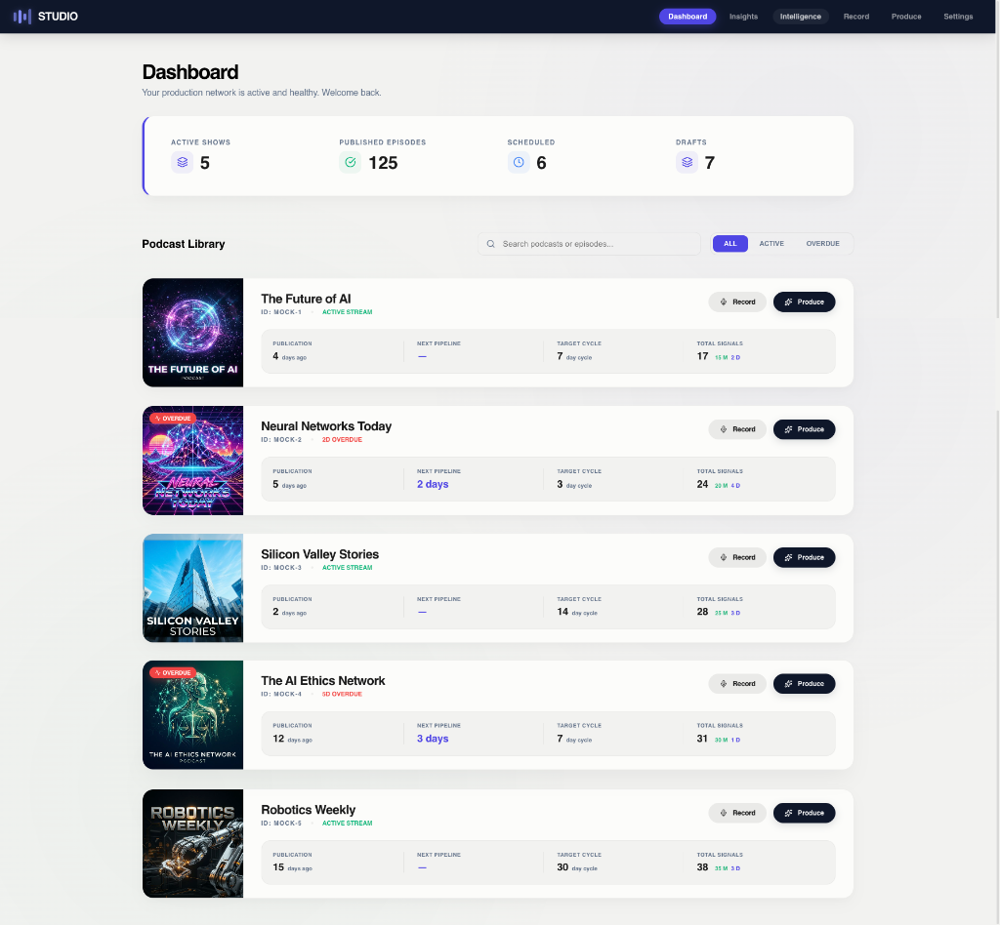
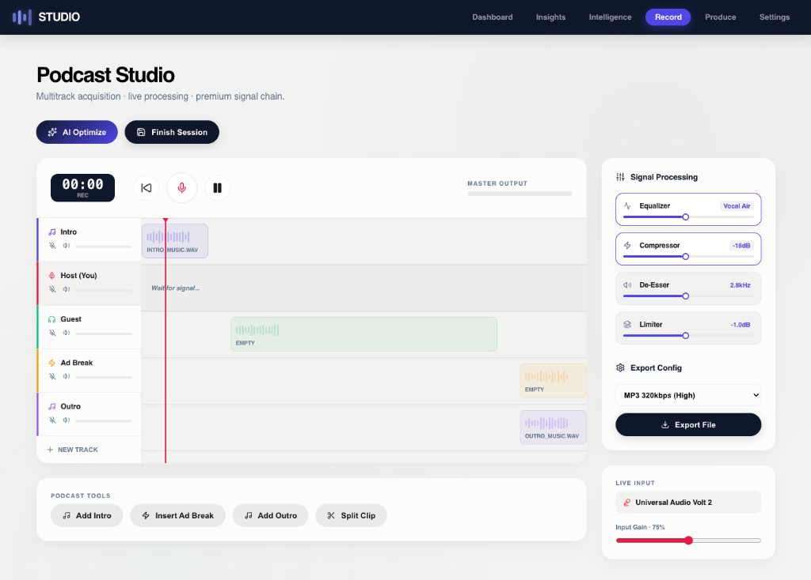
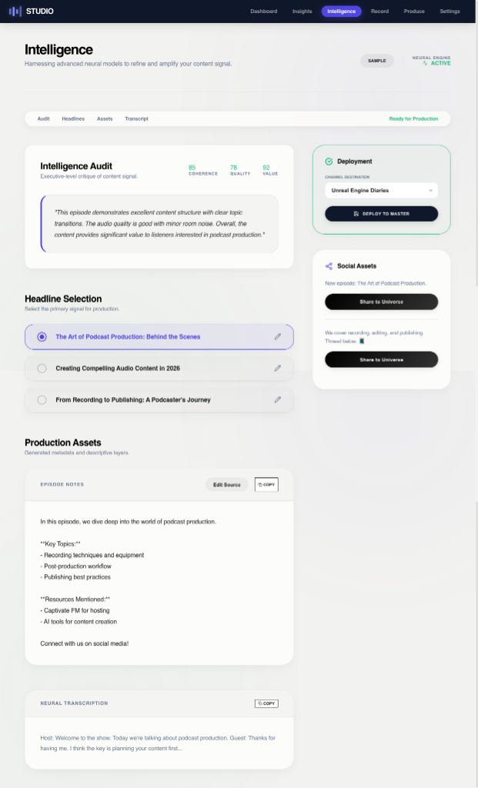
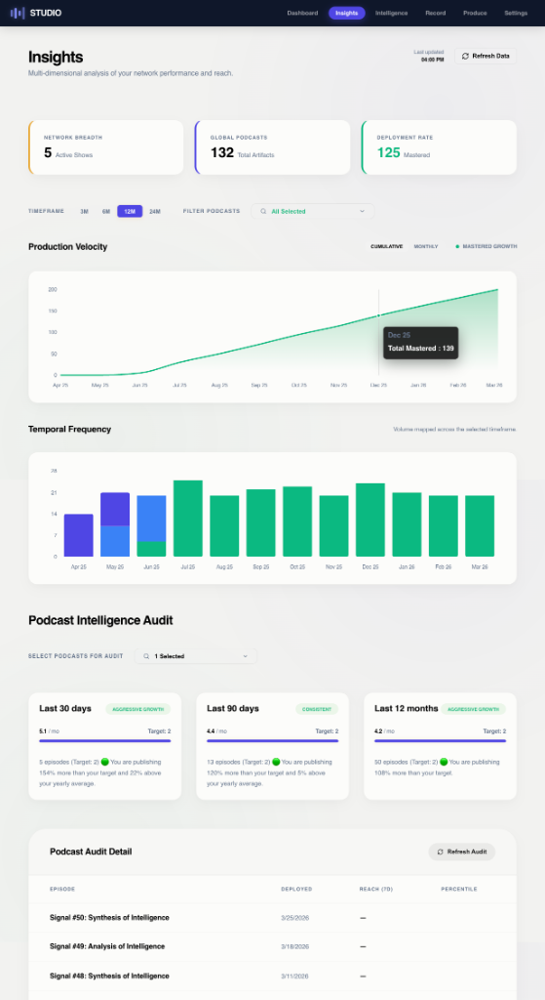

Unified Production Hub
Manage your entire production network from a single, intuitive dashboard. Monitor active shows, track publication progress, and manage your content library with zero friction.
- Network Overview: Get a bird's-eye view of your active shows and total artifacts.
- Episode Lifecycle Tracking: Monitor scheduled episodes and drafts in real-time.
- Centralized Library: Access and manage your entire podcast catalog from one location.
- Streamlined Navigation: Quickly jump between recording, intelligence, and analytics.

Integrated Recording Studio
Capture professional audio with live waveform visualization for real-time signal feedback. The intelligent production pipeline reclaims your time by handling the technical heavy lifting.
- Live Waveforms: Visual signal feedback ensures your levels are perfect throughout the session.
- One-Click Post-Production: The pipeline automatically prepares local files for processing with a single click.
- Direct-to-Neural Flow: Move finished recordings instantly to the Intelligence Lab for immediate analysis.
- Intelligent Local Storage: Securely manage your high-fidelity audio assets directly on your machine.

Flexible AI Intelligence Lab
Process your audio on your terms. Whether you need the privacy of local processing or the power of the cloud, Podcast Monk Studio adapts to your workflow.
- Hybrid AI Orchestration: Use local LLMs and local WhisperAI to produce episodes completely offline, keeping costs low and data private.
- Cloud Connectivity: Seamlessly connect to all major cloud LLMs for advanced semantic reasoning and complex asset generation.
- Neural Audit: Receive objective Quality Scores for every episode, analyzing coherence and audience value.
- Deep Semantic Analysis: Go beyond transcription with an AI that understands the core themes of your content.

Multi-Dimensional Insights
Move beyond surface-level metrics. Podcast Monk Studio provides deep visibility into your production velocity and audience growth.
- Growth Benchmarking: Compare your episode performance against top global tiers (Top 1%, 5%, and 10%).
- Interactive Heatmaps: Visualize your content distribution across weeks and months to identify patterns.
- Production Velocity: Track how consistently you produce and publish content to maintain momentum.
- Stacked Bar Analytics: Get a granular view of your audience engagement across different categories.

The Goldmine Asset Suite
Transform your audio into a library of high-value marketing assets. Your data stays local, encrypted, and accessible in the Persistent Content Hub.
SEO-Optimized Metadata
Automatically generate compelling show notes, episode titles, and summaries that drive discovery and improve search rankings.
Social Media Command
Instantly create engaging Instagram captions, professional LinkedIn posts, and viral X (Twitter) threads derived from your core message.
Creative Scripts
Automatically produce highly-converting teaser scripts and long-form blog posts to effortlessly extend your multi-channel reach.
Unified Content Hub
Access every master recording, snippet, and marketing asset across your entire network from a single, locally encrypted library.
Hosting & Monetization
Publish with confidence and scale your revenue. Podcast Monk Studio integrates deeply with professional hosting platforms.
- Native Captivate Integration: Optimized publishing workflows designed specifically for the Captivate API.
- Global Hosting APIs: Built-in support for all major podcast hosting providers for seamless distribution.
- Ad Management Addon: Scale your revenue or manage sponsorships directly within the application.
- Instant Publication: Push your final assets to your host with a single click once post-production is complete.

Under the Hood: Technical Architecture
Podcast Monk Studio is a high-performance reactive desktop application built on a bleeding-edge stack for the modern creator.
Frontend Excellence
Built on React 19 and Vite 7, featuring Concurrent Rendering and React Router 7 for zero-latency UI updates.
Native Audio Engine
Low-latency audio buffer analysis via Wavesurfer.js and high-speed processing with FFmpeg.
Local Infrastructure
A local Node.js Express server manages the file system and JSON metadata, ensuring everything stays fast and offline-ready.
Intelligent Design
A clean default UI with skeleton context cards and standard Lucide React icons for a professional, premium feel.